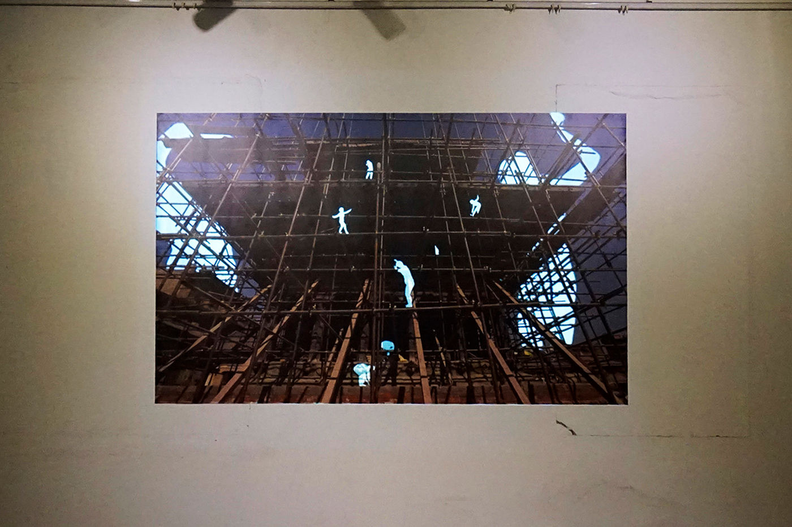

Media Art — 2016
Skein
네팔 대지진으로 무너진 문화유산의 풍경 위에, 실처럼 뒤엉킨 사람들의 움직임으로 희망을 그리는 작업.
Over a landscape of cultural heritage collapsed by the Nepal earthquake, tangled skeins of people trace a movement toward hope.
네팔 대지진 이후, 네팔이 사랑하는 아름다운 문화유산 건축물들이 크게 무너지거나 파괴되었습니다. 지진이 남긴 것은 고통과 절망이지만, 역설적이게도 그 균열 속에는 희망이 공존합니다. 이 작업은 지진으로 손상된 소중한 문화유산의 (재)건축을 담고, 그 풍경 위에 실처럼 뒤엉킨 흰 사람들을 올려놓습니다. 현재를 넘어서는 사람들의 움직임은 우리의 미래를 희망의 문으로 이끌 것입니다.
Tableau Vivant(‘살아있는 그림’) 연작 — 사진과 영상을 결합해, 거대한 사진 이미지 위에 프로젝션 매핑으로 새로운 생명을 부여하는 미디어 아트입니다.
After the earthquake in Nepal, the beautiful cultural heritage buildings the country loves were greatly collapsed or destroyed. Pain and despair remain, yet ironically hope coexists in the cracks. This piece holds the (re)construction of the damaged heritage, with white figures tangled like strings above that scenery — a movement overcoming the present that may lead our future to the gate of hope. Part of the Tableau Vivant (‘living picture’) series — media art combining photography and video, giving a massive photographic image new life through projection mapping.
- 연작
- Series
- Tableau Vivant
Mcube Gallery, Patan, Nepal — 2016